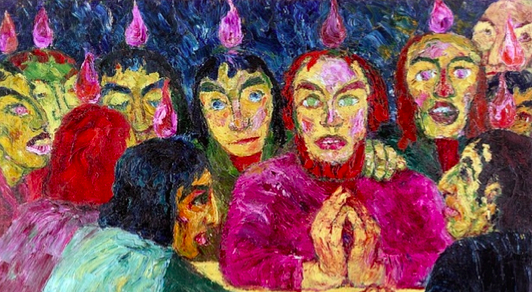

Emil Nolde was one of the first Expressionists, and was one of the first oil painting and watercolor painters of the early 20th century to explore color. He is known for his brushwork and expressive choice of colors. Golden yellows and deep reds appear frequently in his work, giving a luminous quality to otherwise somber tones. His watercolors include vivid, brooding storm-scapes and brilliant florals.
Nolde's intense preoccupation with the subject of flowers reflected his interest in the art of Vincent van Gogh.